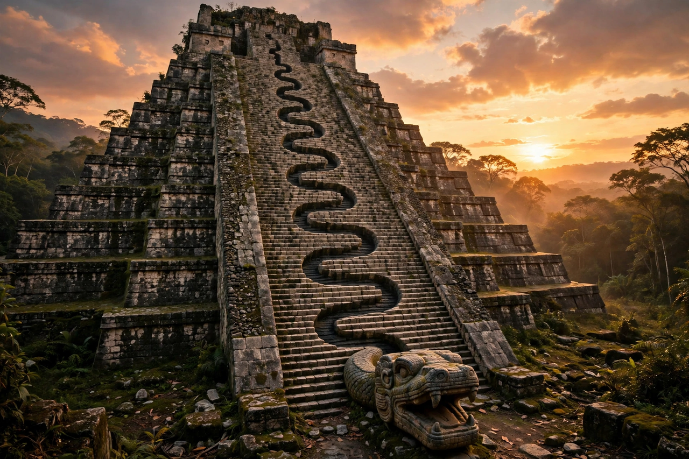

From Wikipedia, the free encyclopedia
| Kukulkan | |
|---|---|
| Affiliation | Maya mythology; the feathered serpent god |
| Yucatec Maya | Kʼukʼulkan — 'Feathered Serpent' |
| Aztec counterpart | Quetzalcoatl |
| Chief site | El Castillo, Chichen Itza |
| Phenomenon | Equinox shadows forming a serpent descending the pyramid staircase |

Kukulkan (Yucatec Maya Kʼukʼulkan) is the feathered serpent god of the Maya of Yucatán — a deity of wind, rain, civilisation and the calendar, counterpart to the central Mexican Quetzalcoatl and older Maya serpent powers reaching back to the Vision Serpent of the Classic period. His monument is the great pyramid of El Castillo at Chichen Itza, whose nine terraces and 365 steps encode the calendar, and whose northern staircase, at the equinoxes, catches the afternoon sun in a pattern of light and shadow that forms a serpent's body descending to the stone serpent heads at its base — a phenomenon that now draws tens of thousands of spectators twice a year.
In the Yucatec books of Chilam Balam, Kukulkan is also a culture hero and founder — a lord who came from the west, founded cities and taught law — a figure euhemerised like Quetzalcoatl whom scholars have connected (contentiously) with historical priest-kings and with the Toltec diaspora into Yucatán in the Postclassic period, when Chichen Itza's art fused Maya and central Mexican styles. The feathered serpent himself is far older than either name: plumed serpents coil through Teotihuacan's Ciudadela centuries earlier, embodying the union of earth (serpent) and sky (quetzal feathers), rain and wind.
Whether the equinox effect was designed or is a happy consequence of the pyramid's geometry and alignment is debated by archaeoastronomers; its modern fame is undoubted, and the Mexican authorities now manage crowds for the descent of Kukulkan each March and September. The god's cult faded with the conquest, but the feathered serpent — in Chichen's stones, in revived Maya ceremony, and in the equinox light itself — remains Yucatán's emblem.